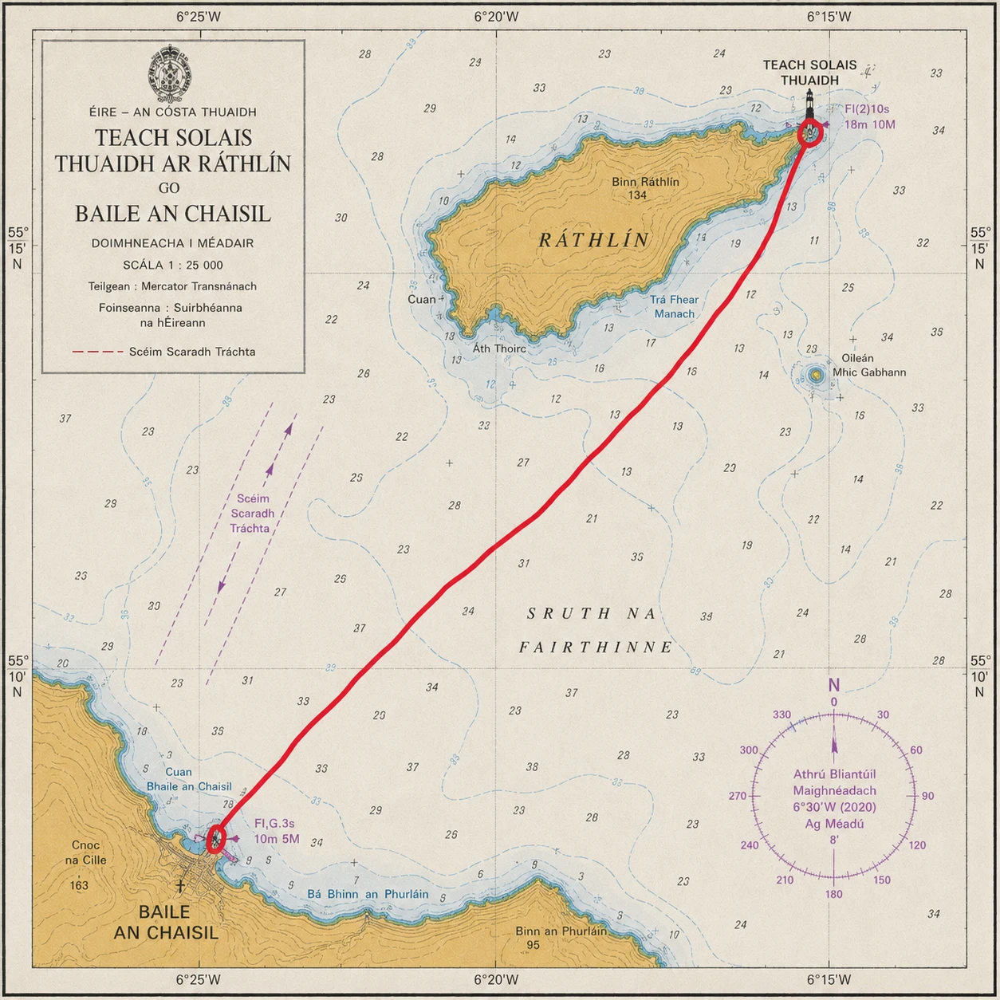

Ulster
Rathlin East Light - Ballycastle (Co. Antrim)
The Sea of Moyle — Bruce's spider above, the Children of Lir below.
- Distance
- ≈ 12 km 10 km+ · accredited
- The light
- Rathlin East Light Co. Antrim · fixed point
- Shore
- Ballycastle Co. Antrim · either direction
- Water
- The Sea of Moyle Ulster
The story
The Sea of Moyle — Bruce's spider above, the Children of Lir below.
East Light of Rathlin Island, first lit 1912.
Rathlin East Light stands at the island's north-eastern tip, above some of the most storied water in Ireland. In the cliffs directly below lies the cave where, by tradition, Robert the Bruce sheltered in the winter of 1306, a fugitive after defeat in Scotland. There, the story goes, he watched a spider try and fail and try again to bridge a gap with its thread — and, taking the lesson, returned to Scotland to win at Bannockburn. Bruce's presence on Rathlin in 1306 is a matter of record; the spider is the island's own.
The channel itself is the Sea of Moyle, the narrow, tide-torn strait between Ireland and Scotland. In the oldest of the Irish myths it is here that the Children of Lir, changed to swans by their stepmother, endured three hundred years of storm — the cruellest stretch of their nine-hundred-year exile.
No crossing in the series carries more weight of story, and none is harder-won.
The crossing
Between Rathlin East Light and Ballycastle.
The crossing links Rathlin East Light with the Antrim mainland at Ballycastle, straight across the Sea of Moyle. It may be swum in either direction. At roughly twelve kilometres it is the shortest of the four — and, by common agreement, potentially the most demanding of them.
Its difficulty has little to do with its length. The Moyle is driven by the great tidal streams of the North Channel, which run fast and turn hard, so the true swum distance is far longer than any straight line as the tide sets the swimmer up and down the coast. Add cold water, full exposure to the open channel, and the sea life that shares it — jellyfish not least — and the shortest crossing becomes the one that most often turns swimmers back. This is the tide-master's swim, and the one the whole series is measured against.
